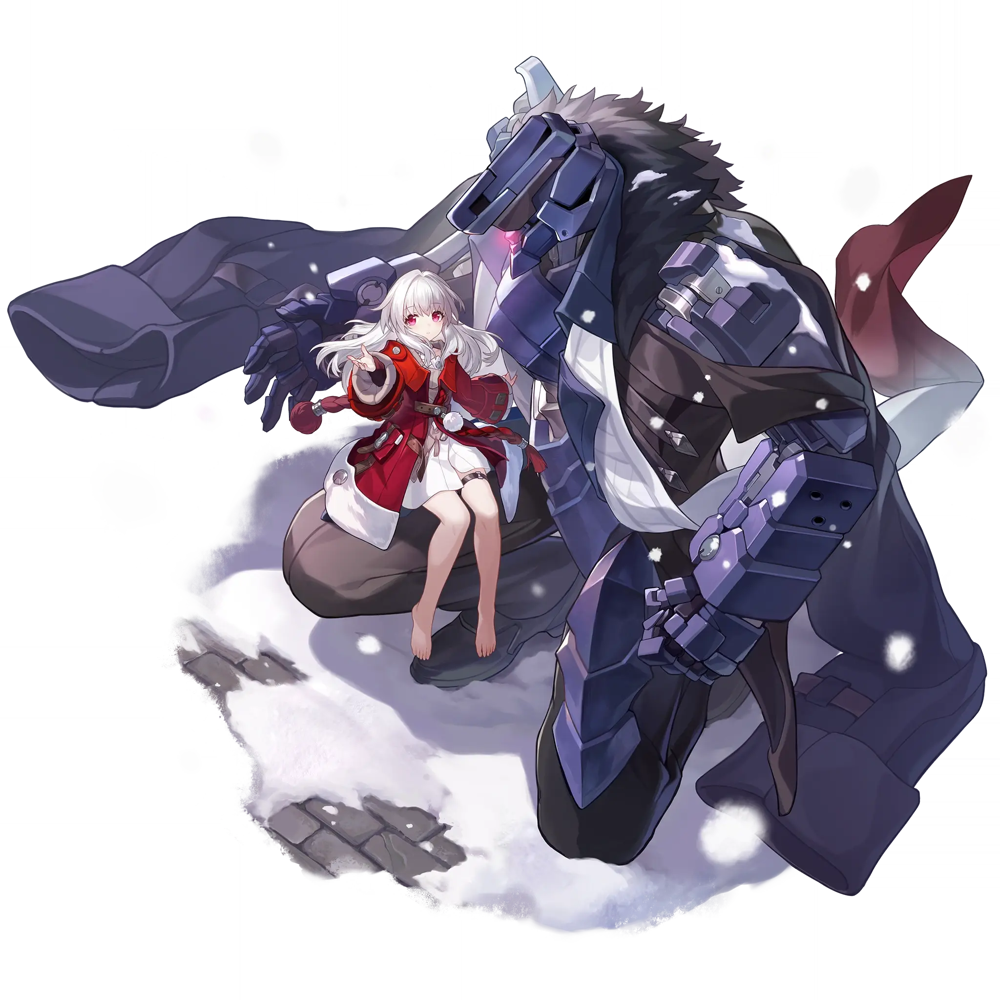

Clara
Best Clara build guide for Honkai Star Rail. See Clara's best Relics, Light Cones, teams, Eidolons, Trace priority, and how to play Clara.
🔍 Detail Skill
Semua skill aktif dan pasif beserta efeknya.
Deals Physical DMG equal to #1[i]% of Clara's ATK to a single enemy.
Deals Physical DMG equal to #1[i]% of Clara's ATK to all enemies, and additionally deals Physical DMG equal to #2[i]% of Clara's ATK to enemies marked by Svarog with a Mark of Counter. All Marks of Counter will be removed after this Skill is used.
Under the protection of Svarog, DMG taken by Clara when hit by enemy attacks is reduced by #3[i]%. Svarog will mark enemies who attack Clara with his Mark of Counter and retaliate with a Counter, dealing Physical DMG equal to #2[i]% of Clara's ATK.
⚔ Light Cone Terbaik
Diurutkan dari yang paling kuat. Persentase menunjukkan performa relatif terhadap pilihan terbaik.
💎 Relic Set Terbaik
Set terbaik untuk karakter ini, diurutkan berdasarkan prioritas.
📊 Stat Utama
Stat yang dicari pada tiap slot.
👥 Tim yang Direkomendasikan
Karakter yang sering dipasangkan bersama Clara.
 Robin
Robin
 Sparkle
Sparkle
 Tingyun
Tingyun
 Dan Heng • Permansor Terrae
Dan Heng • Permansor Terrae
 Clara
Clara
🔗 Lanjutkan
Build ini dirangkum dari Prydwen Institute. Starwise tidak menghitung sendiri. Angka bisa berubah setelah patch atau karakter baru rilis.